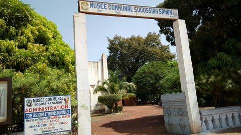

Site9
Musée Sogossira Sanon
Historique
Le Musée Sogossira Sanon est un centre culturel et historique d'importance situé à Bobo-Dioulasso, au Burkina Faso. Il a été inauguré en 1961 en hommage à Sogossira Sanon, un éminent érudit et leader communautaire connu pour son engagement envers la préservation du patrimoine culturel et historique de la région.
Sogossira Sanon, né au début du XXe siècle, a joué un rôle clé dans la documentation des traditions locales et la collecte d'artefacts historiques. Son travail a permis de sauvegarder de nombreux objets et récits qui pourraient autrement avoir été perdus. En reconnaissance de ses contributions, le musée a été nommé en son honneur, et il vise à continuer le travail de préservation et de célébration du patrimoine culturel de la région.
Depuis son ouverture, le Musée Sogossira Sanon a été le lieu de nombreuses expositions importantes, ainsi que de recherches sur l'histoire et les arts du Burkina Faso. Il a joué un rôle essentiel dans l'éducation du public sur la richesse culturelle et historique de la région et continue d'être un centre de référence pour les chercheurs, les étudiants et les visiteurs.
Le musée a également été un catalyseur pour des projets de restauration et de conservation, collaborant avec des institutions nationales et internationales pour protéger les artefacts et promouvoir les traditions culturelles africaines.
Description
Le Musée Sogossira Sanon est un bâtiment moderne, conçu pour offrir un espace fonctionnel et accueillant pour les expositions permanentes et temporaires. Il est organisé en plusieurs sections distinctes, chacune mettant en lumière un aspect différent du patrimoine culturel et historique du Burkina Faso.
Salle des Artefacts Traditionnels
Cette salle est dédiée à la collection d'objets traditionnels fabriqués par les artisans locaux. On y trouve des masques rituels, des statues en bois, des poteries décorées, et divers objets de la vie quotidienne. Chaque artefact est accompagné d'une description détaillée expliquant son usage traditionnel, son origine, et son importance dans les rites et les cérémonies locales.
Les visiteurs peuvent admirer des pièces uniques qui illustrent la diversité des pratiques culturelles et religieuses dans la région. La présentation met l'accent sur l'artisanat local et la signification culturelle de chaque objet.
Salle de l'Histoire Locale
Cette section présente l'histoire de Bobo-Dioulasso et de ses environs à travers des expositions chronologiques. Les visiteurs y découvrent des photographies anciennes, des documents historiques, et des objets liés à des événements marquants tels que la colonisation, les luttes pour l'indépendance, et les évolutions socio-économiques de la région.
Des dioramas et des reconstitutions permettent d'illustrer des scènes historiques importantes, offrant ainsi un aperçu visuel de la vie quotidienne et des événements marquants qui ont façonné la région.
Salle des Arts Visuels
Cette salle est consacrée à l'art visuel contemporain et traditionnel. Elle présente des peintures, des sculptures, des textiles et des œuvres d'artisanat réalisées par des artistes locaux. Les expositions changent régulièrement pour refléter la créativité et la diversité artistique de la région.
Les œuvres exposées couvrent une gamme de styles, du traditionnel au moderne, mettant en lumière l'évolution de l'art et les influences culturelles diverses. Cette salle joue un rôle clé dans la promotion des artistes locaux et la valorisation de leur travail sur la scène nationale et internationale.
Salle des Expositions Temporaires
Le musée organise régulièrement des expositions temporaires sur des thèmes variés, allant des festivals culturels aux projets de conservation spécifiques. Ces expositions permettent de découvrir de nouveaux aspects du patrimoine culturel et artistique de la région, et souvent, elles incluent des collaborations avec d'autres institutions culturelles et des artistes internationaux.
Les expositions temporaires sont conçues pour offrir des perspectives nouvelles et enrichissantes, et pour engager les visiteurs dans des dialogues culturels et éducatifs sur des sujets d'actualité.
Activités Éducatives
En plus des expositions permanentes, le Musée Sogossira Sanon propose une gamme d'activités éducatives destinées à enrichir la compréhension des visiteurs sur la culture et l'histoire locales. Les programmes éducatifs comprennent des ateliers pour les écoles, des conférences, et des visites guidées personnalisées.
Les ateliers offrent une expérience pratique en artisanat, en histoire, et en arts visuels, permettant aux participants de s'engager activement avec les traditions culturelles. Les conférences, animées par des experts en histoire et en arts, approfondissent des sujets spécifiques et favorisent un apprentissage interactif.
Les visites guidées sont conçues pour offrir une perspective approfondie sur les expositions, avec des guides expérimentés qui partagent des anecdotes et des informations contextuelles pour enrichir l'expérience des visiteurs.
Impact Culturel
Le Musée Sogossira Sanon joue un rôle crucial dans la préservation du patrimoine culturel du Burkina Faso. Il est un centre de recherche et de documentation, et il contribue à l'éducation et à la sensibilisation du public sur l'importance de la culture et de l'histoire locales.
En tant que lieu de mémoire et d'apprentissage, le musée favorise la compréhension interculturelle et l'appréciation de la diversité culturelle. Il est un point focal pour les discussions sur la conservation et la promotion du patrimoine africain, et il continue de soutenir les initiatives locales en matière de culture et d'art.
Le musée est également un acteur clé dans la promotion du tourisme culturel, attirant des visiteurs du monde entier qui viennent découvrir la richesse du patrimoine du Burkina Faso et s'engager avec les communautés locales.